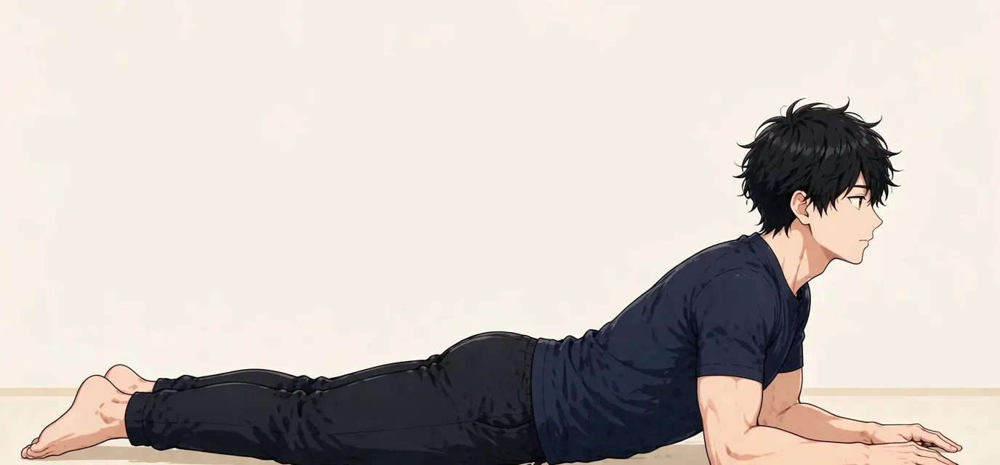

SYMPTOM GUIDE ｜ 東三国・新大阪
腰椎椎間板ヘルニアでお悩みの方へ東三国・新大阪の男性専用整体院 北辰堂
病院で「腰椎椎間板ヘルニア」と診断された。お尻から脚にかけてしびれるような痛みがある。仕事で座り続けるのがつらい——。椎間板ヘルニアは、20〜40代の働く世代の男性に多い腰の代表的な疾患です。
このページでは、ヘルニアの仕組みと神経の分布との関係、東洋医学の見方、施術の考え方、セルフケア、受診の目安を整理しました。診断や治療は医療機関の領域であり、このページは一般的な健康情報です。
① 腰椎椎間板ヘルニアとは
椎間板は、背骨の骨と骨の間にあるクッション構造で、中心の髄核と、それを取り囲む線維輪からできています。腰椎椎間板ヘルニアは、線維輪に亀裂が入り、髄核の一部が外へ飛び出して（突出して）、近くを通る神経根を圧迫する状態です。圧迫による刺激に加え、飛び出した髄核に対する炎症反応も、痛みやしびれの強さに関係すると考えられています。
症状の出方は、どの高さの椎間板で、どの神経根が圧迫されるかで変わります。腰のレベルごとに神経の行き先（皮膚の感覚の領域＝デルマトームや、関係する筋肉）が決まっているため、しびれの範囲や力の入りにくさのパターンから、障害のレベルを推測する手がかりになります。多くは片側のお尻から太もも・ふくらはぎ・足へ放散する痛み（坐骨神経痛様の症状）として現れます。
経過については、飛び出した髄核が体の吸収作用で小さくなり、症状が落ち着いていく場合があることが知られています。多くの場合は保存的な対応（手術をしない対応）で経過を見ますが、脚の麻痺が進む場合や排尿の変化がある場合は、手術を含めた医療機関での判断が必要です。

飛び出した椎間板の髄核が神経根を圧迫すると、その神経の行き先に沿って、お尻から脚の後ろ側へ痛みやしびれが放散します。位置は目安です。
② 要因の整理
ヘルニアの発症には、椎間板への負担のかかり方が関係します。代表的な要因を整理します。
- 前かがみ＋重い物を持つ動作：前かがみ姿勢で重い物を持つと、椎間板の後方へ髄核が押し出される方向に力が働き、負担が最大級になります。仕事で繰り返す方は特に注意が必要です。
- 長時間の座位と運転：座位は立位より椎間板への負担が大きいとされ、特に浅く座る姿勢や長時間の運転は、腰椎下部への負担が続きます。
- 椎間板の加齢・変性という下地：椎間板は20代から変化が始まるとされ、水分量の低下とともに線維輪に亀裂が入りやすい下地ができます。
- 喫煙と血流：喫煙は椎間板への栄養供給を妨げる要因として指摘されています。生活習慣の面からの見直しも、長期的な腰の管理には関係します。
- スポーツや重量挙げの負荷：重量物を扱うトレーニングや、腰を強く使うスポーツは、フォーム次第で椎間板への負担が大きくなります。
③ セルフチェックリスト
状態を振り返るためのチェックです。特に脚の症状の有無と広がり方を確認してください。
- お尻から太ももの後ろ、ふくらはぎへ痛みやしびれが走る
- 前かがみになると脚の症状が強まる
- 咳やくしゃみで脚に響く
- 脚の症状は主に片側に出ている
- 長く座っていられない、座ると脚がつらくなる
- つま先立ち・かかと歩きがしにくい側がある
- 足の甲や親指のあたりの感覚が鈍い
- 腰の痛みより脚の症状のほうが強い
チェックは診断のためのものではありません。「つま先立ち・かかと歩きがしにくい」「感覚が鈍い」などは神経の障害の程度に関わるサインです。進行がある場合は⑧の受診の目安を確認し、医療機関で共有してください。
④ 東洋医学から見た考え方とツボ
東洋医学では、脚の後ろ側を下る痛みやしびれは、足の太陽膀胱経の巡りの滞りと関係すると考えます。膀胱経は背中から腰、お尻、太ももの後ろ、膝裏、ふくらはぎへと下る長い経絡で、ヘルニアで症状が出やすいラインと重なります。お尻の外側の環跳、膝裏の委中、膝の外側の陽陵泉は、このライン上の要所とされるツボです。
北辰堂では鍼灸施術は行いません。東洋医学の視点は、神経を圧迫している構造そのものに働きかけるものではなく、痛みをかばって硬くなった周囲の筋肉や、負担が集中する姿勢の条件を整えるための枠組みとして活かしています。
環跳はお尻の外側、委中は膝の裏の中央、陽陵泉は膝の外側の小さな骨の出っ張りの下あたりにあります。位置は目安です。
ツボ：環跳（かんちょう）
位置：お尻の外側の深い部分にあるツボです。横向きに寝て股関節を曲げたときにできる、お尻の側面のくぼみが目安です。
押し方：仰向けや横向きで、テニスボールをお尻の外側の下に置き、体重をゆっくり預けます。脚への響きが強い場合は中止し、圧は痛気持ちいい範囲より弱めに留めてください。
ツボ：委中（いちゅう）
位置：膝の裏の中央、横シワの真ん中にあります。
押し方：椅子に座って指先で包むように優しく圧を加えます。腰から脚のラインの緊張を確認する目印としても使えます。強く押し込む刺激は避けてください。
ツボ：陽陵泉（ようりょうせん）
位置：膝の外側、すねの骨の外側にある小さな出っ張り（腓骨頭）の、前下あたりのくぼみです。筋肉と腱の状態と関係が深いとされるツボです。
押し方：座った姿勢で親指を当て、小さな円を描くように揉みます。脚の外側の張りが強い日に取り入れやすいツボです。
⑤ 整体・リラクゼーションでの施術の考え方
腰椎椎間板ヘルニアの方への北辰堂の施術は、医療機関での診断と方針を前提に行います。飛び出した髄核そのものを施術で戻すことはできません。施術の役割は、痛みをかばうことで生じる周囲の筋肉の緊張、反対側や胸郭・股関節などへの負担の偏り、座り方などの日常動作を見直し、回復の経過を過ごしやすくするための補助です。
腰を強く反らす・ひねる操作や、脚の症状を強めるようなストレッチは行いません。施術前に、しびれの範囲、力の入りにくさの有無、経過の変化を確認し、進行が疑われる場合は施術を中止して受診をおすすめします。
手術後の方については、主治医の許可とリハビリの方針を確認したうえで、日常生活の負担を整える範囲でのケアを行います。自己判断で術後の運動を始めることは避けてください。
⑥ セルフケア
ヘルニアの方のセルフケアは「神経の症状を強める動きをしない」が大前提です。以下は一般的に負担が少ないとされる動きですが、実施前に主治医への確認を推奨します。

うつ伏せで肘を立て、上体の重さを前腕で支えます。①うつ伏せになる ②肘を肩の下に置く ③脚の症状が強まらない範囲で30秒〜1分保つ、が基本の流れです。脚のしびれが強まる場合は中止してください。
セルフケア1：うつ伏せの肘立て
うつ伏せになり、肘を肩の下に置いて前腕で上体を軽く支えます。腰を力で反らすのではなく、姿勢として保つことがポイントです。30秒〜1分を目安に、脚の症状が強まらない範囲で行います。症状が強まる場合はすぐに中止してください。
セルフケア2：歩行
痛みやしびれが悪化しない範囲での歩行は、日常生活の基本です。短い距離から始め、歩いた後の脚の症状の変化を確認しながら距離を調整します。悪化する場合は量を減らしてください。
セルフケア3：座り方の工夫
椅子に深く座って坐骨を立て、腰の後ろに小さなクッションを入れて腰のカーブを保ちます。30分を目安に立ち上がる区切りを入れ、座りっぱなしを避けます。車の運転は特に負担が大きいため、症状の強い時期は長距離を避けてください。
セルフケア4：持ち上げ動作の変更
物は体に近づけ、腰ではなく股関節と膝を使って持ち上げます。前かがみ＋ひねりの動作は避け、重い物は無理をしないことが、悪化と再発の予防の基本です。
⑦ 場面別の注意
- 仕事中（デスクワーク）：座位の負担が症状を左右します。スタンディングデスクの併用、短い休憩での歩行、電話は立って行うなど、座り続けない工夫を積み重ねてください。
- 重い物を扱う仕事：発症直後や症状の強い時期は、重量物の取り扱いを控える調整を職場と相談してください。産業医や主治医の意見書が役立つ場合もあります。
- 車の運転時：振動と座位の組み合わせは負担が大きい条件です。やむを得ない場合は休憩を細かく取り、降車時に腰と脚の状態を確認してください。
- スポーツ時：症状のある時期のゴルフや重量トレーニングは、腰への負担が大きい種目です。再開の時期と内容は主治医と相談し、段階的に戻してください。
⑧ 受診の目安
- 脚の力の入りにくさが進んでいる（つま先が上がらない、スリッパが脱げる等）
- 排尿・排便の変化（出にくい、漏れる、会陰部の感覚の鈍さ）がある
- 両脚に症状が広がってきた
- 痛みが非常に強く、どのような姿勢でも眠れない
- 安静と生活の見直しを続けても、数週間、症状が悪化し続けている
- 発熱を伴う
排尿・排便の変化や会陰部の感覚の異常は、馬尾症候群と呼ばれる緊急性の高い状態のサインである場合があり、速やかな医療機関の受診が必要です。また、脚の麻痺が進行する場合は、手術を含めた判断が医療機関で行われます。整体での経過観察にこだわらず、変化があれば受診してください。
⑨ よくある質問
Q. ヘルニアは自然によくなることがありますか？
飛び出した髄核が吸収されて小さくなり、症状が落ち着く経過をたどる方がいることは知られています。ただし全ての方がそうなるわけではなく、経過は個人差があります。医療機関で経過を見ながら、悪化のサインがないかを確認することが大切です。
Q. 整体でヘルニアを押し戻せますか？
施術で髄核を元の位置に戻すことはできません。当院の役割は、周囲の筋肉の緊張や姿勢・動作の負担を整え、回復の期間を過ごしやすくする補助です。構造そのものへの治療は医療機関の領域です。
Q. 仕事を休まないといけませんか？
症状の程度と仕事の内容によります。デスクワークであれば座り方の工夫で続けられる場合もあれば、重量物を扱う仕事では調整が必要な場合もあります。主治医に仕事内容を伝えて相談することが確実です。
Q. 運動はいつから再開できますか？
目安は症状の経過によって異なります。一般に痛みの強い時期は負荷の大きい運動を避け、歩行など負担の少ない活動から段階的に戻します。再開の時期は主治医と相談してください。当院でも状態を確認しながらお伝えします。
北辰堂のご案内
北辰堂は、大阪市淀川区東三国二丁目にある整体院です。男性スタッフ1人で運営しているため、男性専用としています。施術歴30年の平賀建人（鍼灸師・国家資格）が、整体とリラクゼーションを行います。当院では鍼灸施術は行いません。営業は平日・土曜17:00〜22:00、日曜10:00〜22:00の完全予約制です。料金は60分 初回2,000円／2回目以降6,000円、90分 初回3,000円／2回目以降9,000円で、お支払いは現金のみです。プライバシーへの配慮のため、詳しい住所はご予約確定後にLINEでご案内します。
メニュー・料金は料金・メニューページ、施術者については当院についてをご覧ください。
関連するお悩み
ご予約・ご相談はLINEから
東三国・新大阪・淀川区周辺で、体のケアの相談先をお探しの方は、LINE公式アカウント（北辰堂）からお気軽にご連絡ください。現在の状態をお聞きしたうえで、施術の進め方をご案内します。
LINEで予約する